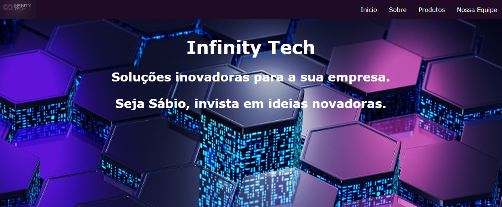
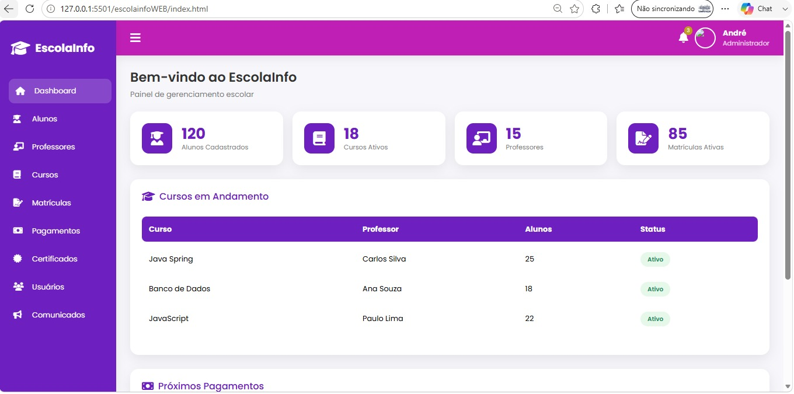

Backend
Construção de aplicações e APIs robustas com foco em organização e regras de negócio.
DESENVOLVEDOR DE SISTEMAS
Atuo principalmente no desenvolvimento Backend, trabalhando com Java, Spring Boot, APIs REST e bancos de dados, além de conhecimentos práticos em desenvolvimento Web para construir soluções completas e integradas.
public class Developer {
private String focus = "soluções";
private String stack = "Java + Web";
public void build() {
learn();
create();
evolve();
}
}01 / SOBRE
Sou André Heller, desenvolvedor de sistemas apaixonado por tecnologia, aprendizado contínuo e construção de produtos digitais.
Minha base passa por Java, Spring Boot, JavaScript, HTML, CSS, SQL e desenvolvimento de APIs REST. Gosto de entender o problema antes de escrever o código e transformar requisitos em sistemas organizados, responsivos e fáceis de evoluir.
02 / STACK
Construção de aplicações e APIs robustas com foco em organização e regras de negócio.
Interfaces responsivas, acessíveis e com atenção à experiência de quem utiliza o sistema.
Modelagem, consultas e integração com bancos relacionais para aplicações completas.
Versionamento, desenvolvimento e documentação para manter o projeto sustentável.
03 / PROJETOS

WEB / ENTRA21
Solução fictícia para gestão de estoque, criada para praticar desenvolvimento web e construção de uma experiência digital para uma empresa.
Ver projeto ↗
FRONTEND
Projeto focado em JavaScript, manipulação do DOM e construção de uma interface simples e funcional.
Ver projeto ↗JAVA / SISTEMA
Sistema de estoque desenvolvido para aplicar Java, POO e regras de negócio em um projeto de maior porte.
Explorar no GitHub ↗JAVA / POO
Implementação das regras do xadrez para consolidar conceitos de orientação a objetos e organização de código.
Ver código ↗OPEN SOURCE / GITHUB
Veja outros estudos, experimentos e projetos de desenvolvimento no meu GitHub.
Acessar GitHub ↗04 / JORNADA
Formação presencial em desenvolvimento Java, orientação a objetos e construção de projetos.
Formação técnica com foco em desenvolvimento web, banco de dados, APIs, engenharia de software e projetos.
Bacharelado em Ciência da Computação
Expandindo conhecimentos em backend, arquitetura, cloud e desenvolvimento de aplicações cada vez mais completas.
05 / CONTATO
Estou aberto a oportunidades, projetos e conexões na área de tecnologia.